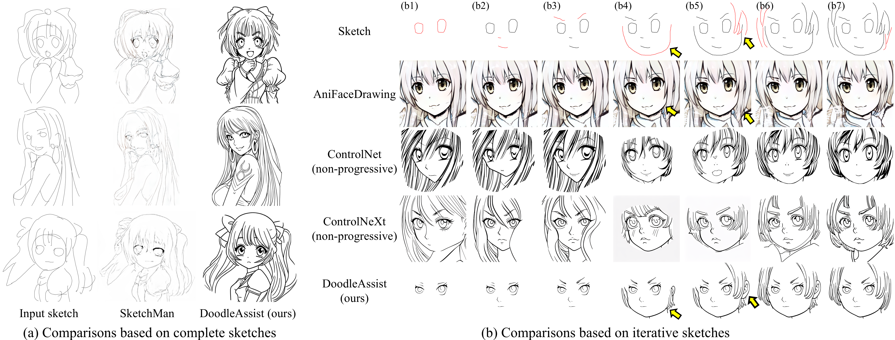
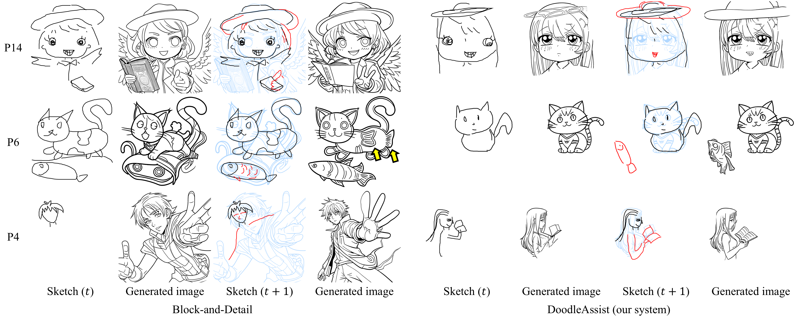

Results
Result Gallery

Support for different creation workflows of participants in the user study. We plot their different actions along a timeline using color coding. The
four results of each participant correspond to the orders on the timeline.
Comparisons 1

Comparisons with line art generation methods based on complete or iterative sketches.
Newly added strokes are highlighted in red.
Comparisons 2

User study of iterative sketch to line art generation between Block-and-Detail system and ours. Newly added or modified strokes are highlighted
in red. Blue drawings underneath are the last generated images.